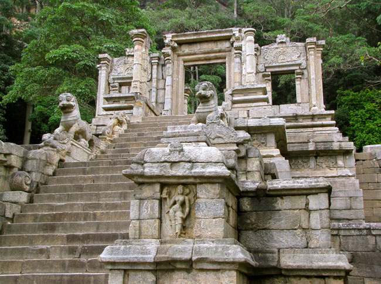
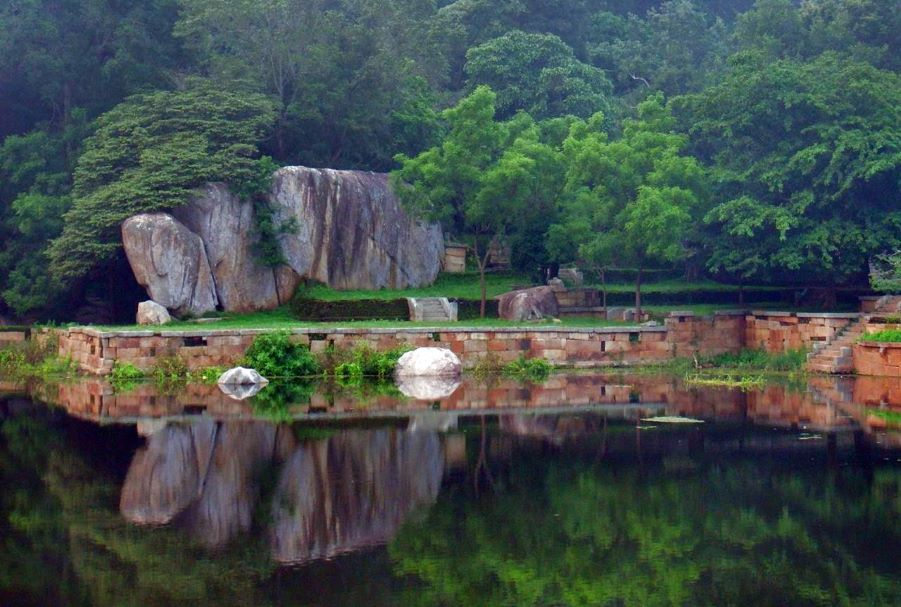
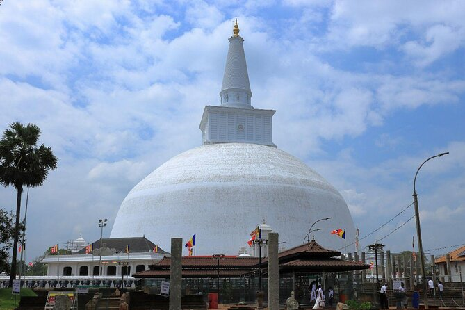
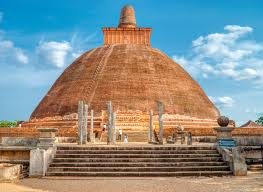
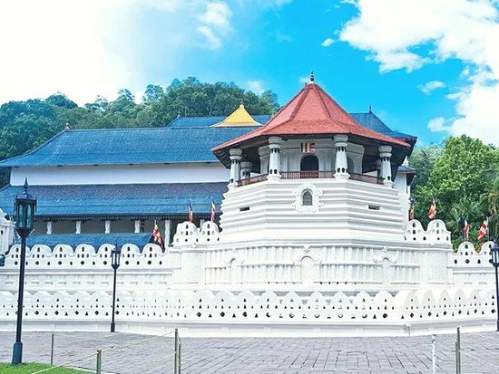
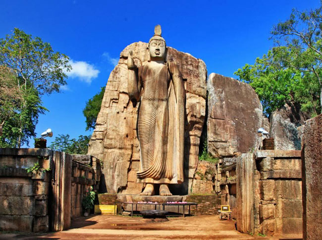
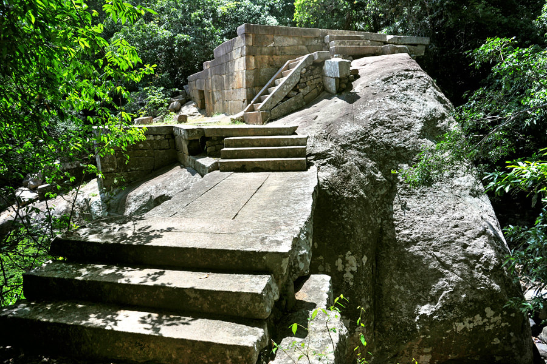

HISTORY & CULTURES
Sri Lanka, an island nation in the Indian Ocean, has a rich and diverse history shaped by ancient civilizations, colonialism, and cultural influences. The island's history dates back over 3,000 years, with the early Sinhalese settlers establishing powerful kingdoms such as Anuradhapura and Polonnaruwa, which were centers of Buddhist culture. The island later faced invasions and colonization by the Portuguese, Dutch, and British, each of whom left lasting marks on its society, economy, and architecture. Sri Lanka gained independence from Britain in 1948, but ethnic tensions between the Sinhalese majority and Tamil minority led to a brutal civil war, which ended in 2009 with the defeat of the Tamil Tigers.
Culturally, Sri Lanka is a melting pot of religious and ethnic traditions. The majority of the population practices Theravada Buddhism, which influences the country’s art, architecture, and festivals, such as the famous Kandy Esala Perahera. Hinduism, Islam, and Christianity also play significant roles in Sri Lankan society, particularly among the Tamil and Muslim communities. Sri Lankan cuisine is famous for its use of spices, with rice and curry being the staple dish. The island's natural beauty, from its pristine beaches to lush rainforests and wildlife reserves, adds to its cultural richness, making it a popular destination for tourists.
MUST SEE PLACES

Sigiriya Rock Fortress

Dambulla Cave Temple

Sri Pada / Adam's Peak

Yapahuwa

Mihinthale

Ruwanweli Maha Seya

Jethawanaramaya

Colombo Dutch Museum

Temple of the Tooth (Sri Dalada Maligawa)

Avukana Buddha Statue

Ritigala